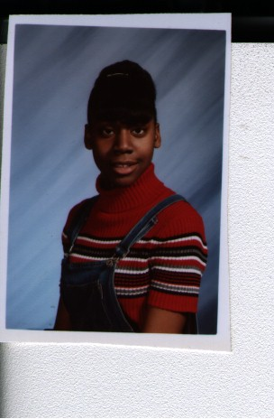
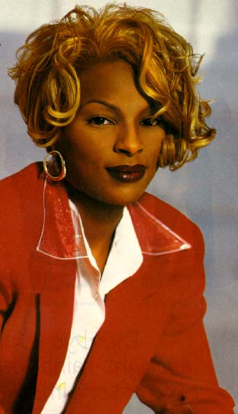
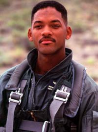
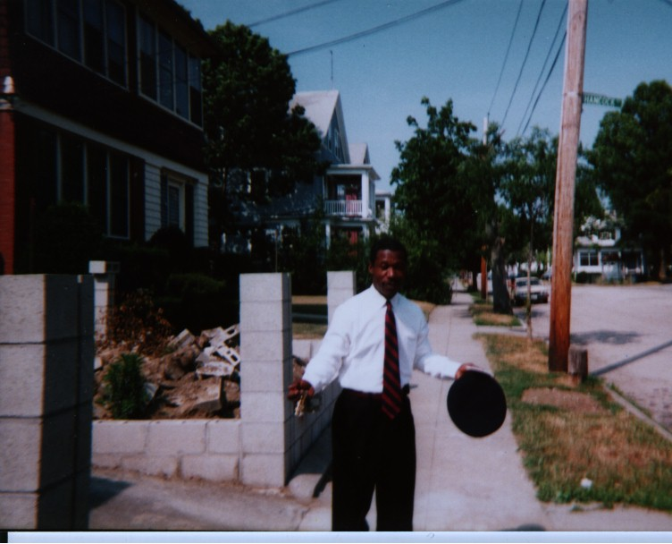
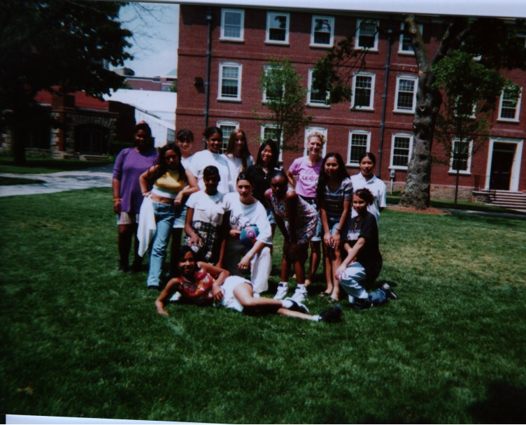

Waz up, my name is Rebecca LaFortune. I'm a member of the Artemis Project for the summer of '97'.
The Artemis project is a very interesting project for young girls. It teaches us a variety of computer skills. I recommend this program for girls who would like to enter the computer fields when they grow up.
Let me talk a little about myself. I Like to do diffrent activitys. That is why I'm not a boring person. I enjoy
When I grow up I would like to be a Pediatric Sergant and a actress or singer. I would love to go to Mississippi University and Howard medical school.I want to be all that I can be, because When I grow up I don't want to have a boring life. I want my life to be filled with excitment.

, Dru Hill , 112, and many others.My favorite rap artistes are, Missy,Puff Daddy, Lil Kim, Foxy Brown, Heavy D., D.J Quick, Jay Z.,Will Smith

, and many more. I also like to Freestyle.I'm a very diffrent person. I'm loud,funny, outspoken, and very energetic.
I like
to daydream alot about how my life will be like when I grow up .
I day
dream of all sorts of things. But sometimes I have to remind myself that
we're in reality. That doesn't stop me from imagining things.
The true tthing I enjoy doing in my life is singing Gospel music. Many people don't know that I can sing, but thats alright because one day I'm going to surprise them, by singing my favorite song Sparrow. They'll be hypnatized ( sorry if I spelled it wrong).
My dad is a very hard working man.

He works hard to keep us happy, but sometimes he works to hard. I wish I could say the same for my mom. Me and my mom don't get along very well. She thinks that her dreams for my life are my dreams. She has already planned out the way that she wants my life to be when I grow up. I'v enjoyed the Artemis project alot. I've
learned more than I expected in computers. It has been a great learning
experiance for me. Jess and Saori are the greatest. I don't think anyone
can teach us computer skills like those two. I've really enjoyed Artemis
(I'm not saying that to make Jess and Saori feel good. I'm saying it
because I really mean it.). I 've also enjoyed the food. Thanks to all the
buisness that donated food to us. Again Thank You Jess and Saori also The
Swear house for making it one of the best summers I've had.
SO PEACE TO ALL MY PEOPLE EVERY !!!!!!!!
